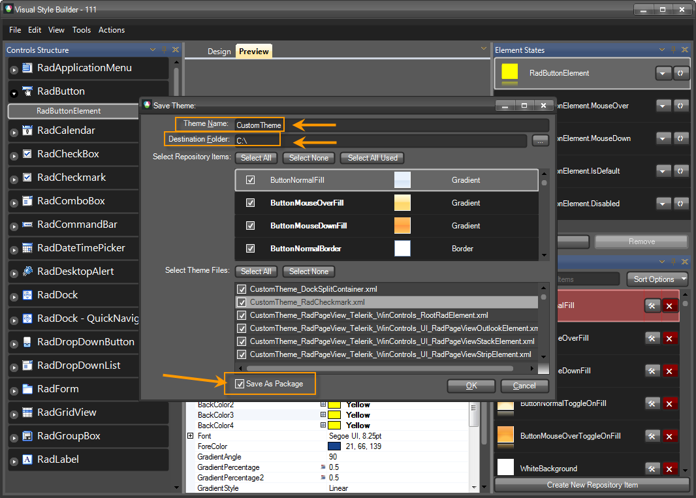

Using custom themes
Since version Q1 2010 of the WinForms Visual Style Builder we have introduced a new theming
mechanism, which allows you to create or modify one theme at a time, but for all Rad Controls
simultaneously. Once the theming process is finished here is how save the theme and apply it in your
application:
Saving a custom theme
When you choose the Save option, the Visual Style Builder automatically detects whether a
theme has been opened and edited. If yes, it simply overwrites the already loaded files with
the new XML data. However, if you created a new theme without loading files, the
Visual Style Builder will display the Save As dialog and will ask you to choose location
and theme name for the newly created theme and its repository. What is important is to set
the ThemeName and to check the Save As Package checkmark, which will save the theme as .tssp file:

Loading theme package
ThemeResolutionService exposes two methods that allow you to load a theme package:
- LoadPackageResource. This method loads a theme package file that is contained in the project as an EmbeddedResource. This is the preferable method for loading a theme package since the resource path to the package is not changed when the application is deployed. The path construction is DefaultProjectNamespace.ThemeFolder.ThemePackageFile. The ThemeFolder part should only be used if the package is contained in a folder under the main project directory and if the project programming language is C#. In VB.NET project you do not need to include ThemeFolder part even if the package file is contained in a folder.
[C#] Loading package resource
ThemeResolutionService.LoadPackageResource("SamplesCS.CustomTheme.tssp");
[VB.NET] Loading package resource
ThemeResolutionService.LoadPackageResource("SamplesVB.CustomTheme.tssp")
- LoadPackageFile. This method loads a file from a specified directory on the system. Depending on how the directory is defined (full or relative), the path to the package may change when the application is deployed on another machine.
[C#] Loading package file
ThemeResolutionService.LoadPackageFile(@"C:\CustomTheme.tssp");
[VB.NET] Loading package file
ThemeResolutionService.LoadPackageFile("C:\CustomTheme.tssp")
Applying a theme to an entire application
__[C#] __
ThemeResolutionService.ApplicationThemeName = "CustomTheme";
__[VB.NET] __
ThemeResolutionService.ApplicationThemeName = "CustomTheme"
Applying a theme to single control
__[C#] __
radButton1.ThemeName = "CustomTheme";
__[VB.NET] __
radButton1.ThemeName = "CustomTheme"
Applying a theme to all instances of a specific control in a form
__[C#] __
foreach (Control control in this.Controls)
{
RadButton button = control as RadButton;
if (button != null)
{
button.ThemeName = "CustomTheme";
}
}
__[VB.NET] __
For Each button As RadButton In Me.Controls
If button IsNot Nothing Then
button.ThemeName = "CustomTheme"
End If
Next